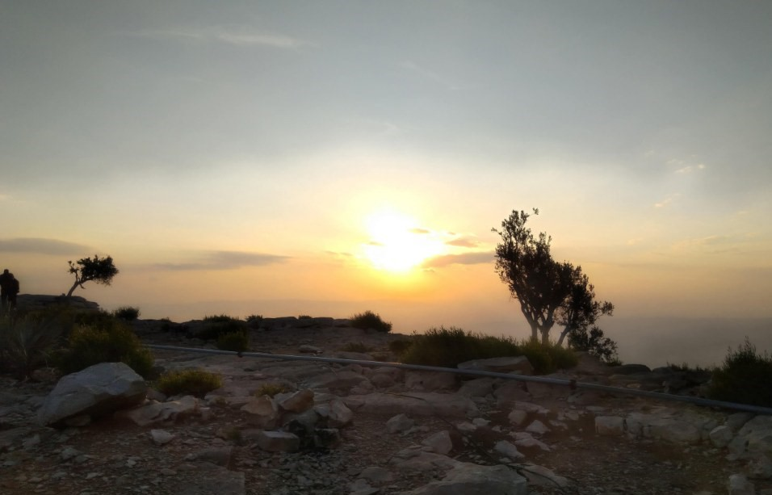
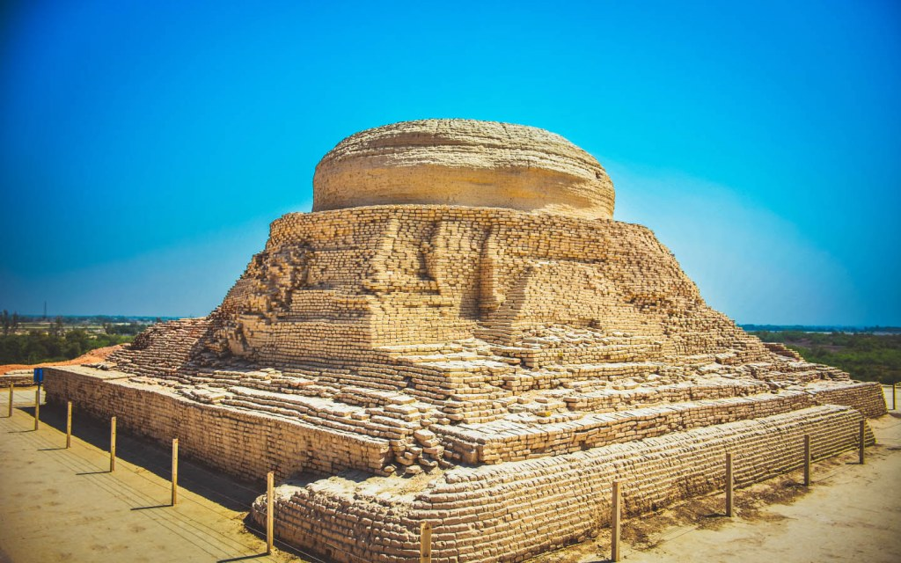
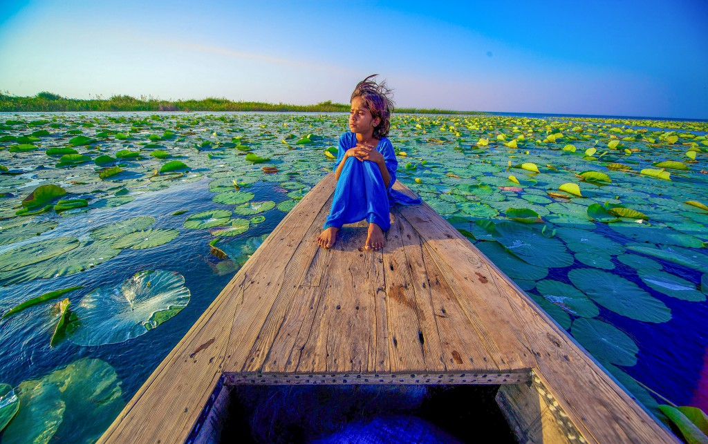

Sindh, also spelled Sind, province of southeastern Pakistan. It is
bordered by the provinces of Balochistān
on the west and north, Punjab on the northeast, the Indian states of
Rajasthan and Gujarat to the east,
and the Arabian Sea to the south. Sindh is essentially part of the Indus
River delta and has derived its name from that river,
which is known in Pakistan as the Sindhu. The province of Sindh was
established in 1970.
The provincial capital, Karāchi, is situated on the southwestern coast.
Area 54,407 square miles (140,914 square km). Pop. (2006 est.)
35,864,000.
EXPLORING THE FAMOUS TOURIST ATTRACTIONS IN SINDH:
We will first list down and discuss some of the most famous tourist spots
in Sindh that will excite all our readers who are history buffs and/or
adventure-seekers.
Gorakh Hill
Mohenjo Daro
Keenjhar Lake
Shah Jahan Mosque
GORAKH HILL STATION:

One of the most famous hill stations in Pakistan, Gorakh Hill is among the
tourist spots in Sindh that live up to the
hype. Found within the heart of Sindh in Dadu District, the hill station
is amazingly located at an altitude of 5,688 ft
(1,734 metres) above sea level and is popularly known as the ‘Murree of
Sindh.’ Gorakh Hill was first discovered
during the British Raj in the 1860s, which was completely developed and
launched as a hill station more than a
decade later in 1989.
MOHENJO DARO:

The city of Mohenjo Daro is one of the most famous UNESCO World Heritage
Sites found in Pakistan. As per the
findings of archeologists, the history of Mohenjo Daro is thousands of
years old, dating back to 26th century BC. This
ancient city was a part of the major urban settlement of the Indus Valley
Civilization, also known as Harappan
Civilization. Mohenjo Daro is a word derived from Sindhi, a language
spoken locally in the region, which means
‘Mound of the Dead’.
KEENJHAR LAKE:

Keenjhar Lake, popularly known as Kalri Lake, is one of the most wildly
underrated tourist destinations in Sindh.
Extending over 134 km sq, it is the second-largest freshwater lake in
Pakistan. It is a man-made reservoir formed as a
result of the construction of an embankment, which resulted in the union
of two lakes: Sonehri and Keenjhar as well
as many local streams that drain into the lake to form a large water body.
The lake has been declared as a wildlife
sanctuary and serves as a safe habitat for many local and migratory bird
species including ibises, terns, egrets, coots, geese, ducks, herons,
flamingos, cormorants, waders, and gulls.
SHAH JAHAN MOSQUE:
The Shah Jahan Mosque, which is one of the most attractive remnants of the Mughal era in the region, acts as the
Jamia Mosque for the city of Thatta. The construction of this beautiful historic landmark began in the year 1644.
While residing in Thatta, Mughal Emperor Shah Jahan ordered the construction of the mosque, which is why it was
named after him. It took a period of over three years for this magnificent structure to be built. The gates of
this
masjid were officially opened right after its completion.